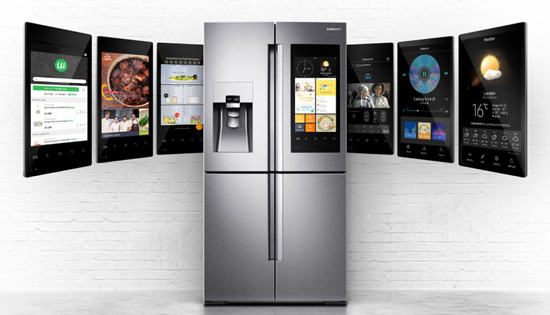
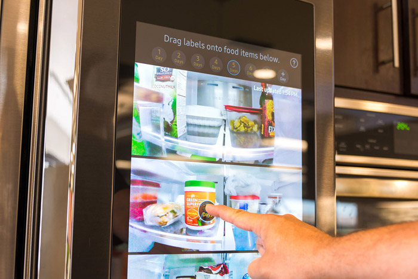
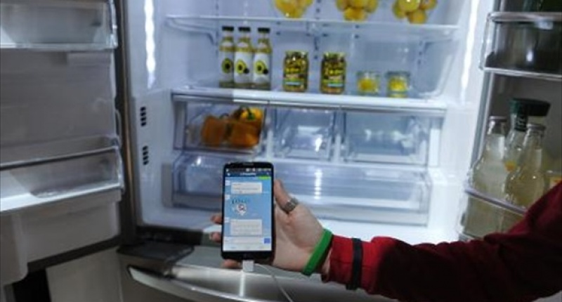
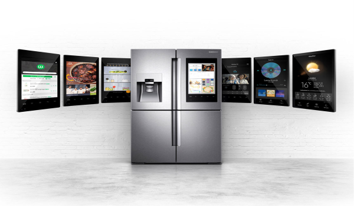
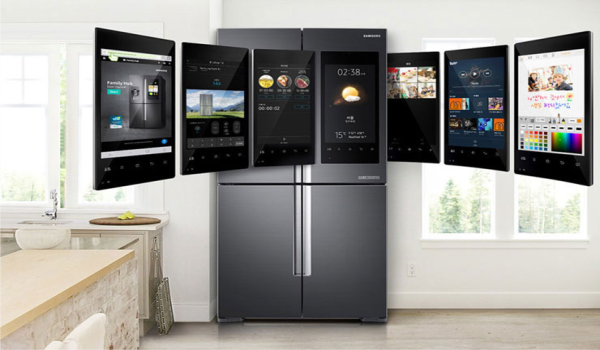

Kulkas Samsung Family HubTM
Nama Anggota Kelompok
Samsung Family Hub 3.0 versi 2018
Pada awal Desember 2018, Samsung mengeluarkan produk terbarunya yaitu sebuah kulkas yang memiliki kecanggihan luar biasa. Kulkas tersebut dibuat dengan memanfaatkan teknologi artificial intelligence (AI) dan internet of things (IoT) yang saat ini marak digunakan oleh perusahaan-perusahaan teknologi di dunia.
Produk terbaru itu diberi nama Samsung Family Hub 3.0 versi 2018, karena tahun sebelumnya Samsung juga sudah mengeluarkan produk yang sama.
Lemari es tersebut tercipta melalui hasil kerjasama antara Samsung dengan Woolworths. Family Hub 3.0 merupakan salah satu perangkat smarthome yang sangat cocok digunakan bagi keluarga besar dengan dapur sempit dan tidak mempunyai waktu untuk berbelanja ke supermarket.
Fitur Utama
Samsung Family Hub 3.0 versi 2018
1. Family Board
Family Board sendiri merupakan sebuah layar komunal yang memungkinkan anggota keluarga pemilik Family Hub bisa saling berinteraksi dengan cara yang dipersonalisasi. Bisa dibilang, Family Hub bisa membantu membina hubungan keluarga lebih baik dalam hal pengelolaan makanan di dalam lemari es.
Berkat teknologi tersebut, anggota keluarga pemilik Family Hub bisa menggunakan lemari es tersebut menjadi lebih pintar, hands-free dan lebih personal.
2. Bixby
Bixby Merupakan sebuah teknologi voice assistant yang menawarkan banyak layanan karena dapat memungkinkan pengguna untuk mengendalikan dan memantau perangkat dan layanan IoT di dalam rumah secara mulus dari dapur, cukup dengan perintah suara.
Pengguna juga dapat dapat mencari tiket pesawat, memesan taksi online dan mengatur oven hanya dengan berbicara ke Family Hub.
Melalui teknologi pengenalan suara Bixby, suara setiap anggota keluarga dapat dibedakan sehingga setiap orang memperoleh informasi yang disesuaikan dengan kebutuhan masing-masing.
Kelebihan
Samsung Family Hub 3.0 versi 2018
Menampilkan resep makanan
Lemari es canggih tersebut dilengkapi 4 buah pintu, satu pintunya terdapat sebuah layar sentuh seluas 21.5 inci yang dapat digunakan untuk menulis daftar belanjaan dan juga mampu menampilkan lebih dari 2000 resep makanan. Layar tersebut juga mengkloning (mirroring) atau menampilkan screen pada smartphone dan TV yang bermerk Samsung. Setiap resep yang terdapat pada layar sentuh kulkas bisa melihat detail bahan-bahanya. Jika barangnya tidak tersedia di lemari maka Samsung Family Hub akan menambahkannya secara otomatis ke daftar belanja. Selain itu penggunanya juga bisa menghapus bahan-bahan yang tidak diperlukan dari resep.
Sebagai penghubung dengan perangkat lain
Fungsi lain dari kulkas tersebut yaitu menjadi pusat komunikasi keluarga atau servernya rumah. Karena lemari es ini sudah didukung teknologi Bixby yang bekerja menggunakan teknologi AI sehingga membuat kulkas ini bisa diperintah melalui suara. Adapun perintah yang bisa pengguna lakukannya yaitu mengecek stok dan masa kadarluasa makanan yang ada di dalam lemari dan lain sebagainya.
Bisa diperintah menggunakan suara
Teknologi Bixby merupakan asisten virtual yang diperkenalkan Samsung. Aplikasi pertama kali diterapkan secara default di Samsung Galaxy S8 dan Galaxy S8 Plus. Bixby memiliki fungsi menampilkan semua yang diperintah oleh pemiliknya melalui layar smartphone. Bahkan aplikasi tesebut disebut sebagai inovasi terbaru untuk melakukan pencarian dan berinteraksi denga smartphone. Perintah tersebut bisa dilakukan melalui gambar, teks, hingga suara.
Sebagai monitor CCTV
bisa digunakan oleh ibu di rumah untuk memantau anak-anaknya dengan memanfaatkan monitor pada pintu kulkas. Terdapat kamera yang bisa terhubung dengan CCTV yang terletak di bagian setiap ruangan rumah. Sepertinya kulkasi ini sangat cocok bagi ibu yang memiliki anak-anak yang nakal jika ia lagi di dapur.
Menampilkan jadwal aktivitas sehari-hari
Lamari es ini juga mampu menampilkan jadwal pelajaran anak, jadwal rapat, catatan harian dan lain sebagainya.
Bisa memutar music
Bagi anda yang suka hobi mendengar musik maka tenang saja, Family Hub 3.0 bisa memutar lagu-lagi favorit koleksi Spootify.
Untuk mendukung kinerjanya maka disematkan speaker AKG yang dapat menghasilkan suara jernih dan bass “nendang”Spesifikasi Produk
- Layar sentuh berukuran 21,5 inc dengan resolusi full HD
- 3 Kamera berkualitas tinggi
- Bisa mengontrol menggunakan aplikasi samsung smart home
- speaker dari pabrikan AKG
- fasilitas screen mirroring dengan Samsung Tizen TV
- sistem pendingin Triple and Metal Cooling system